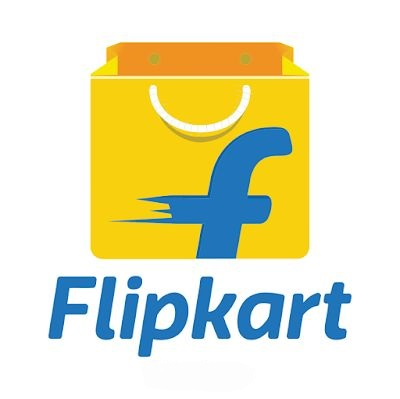
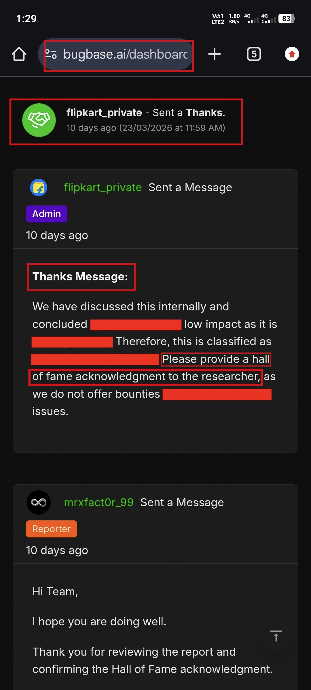
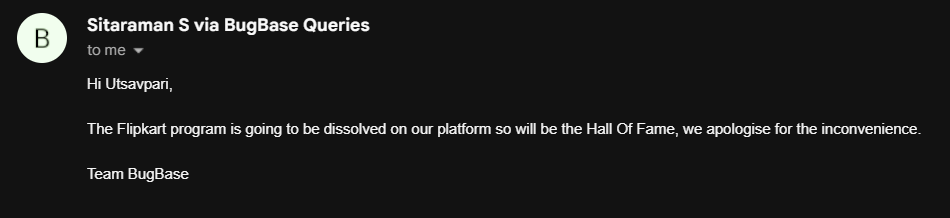
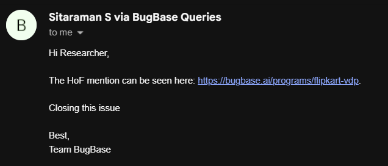
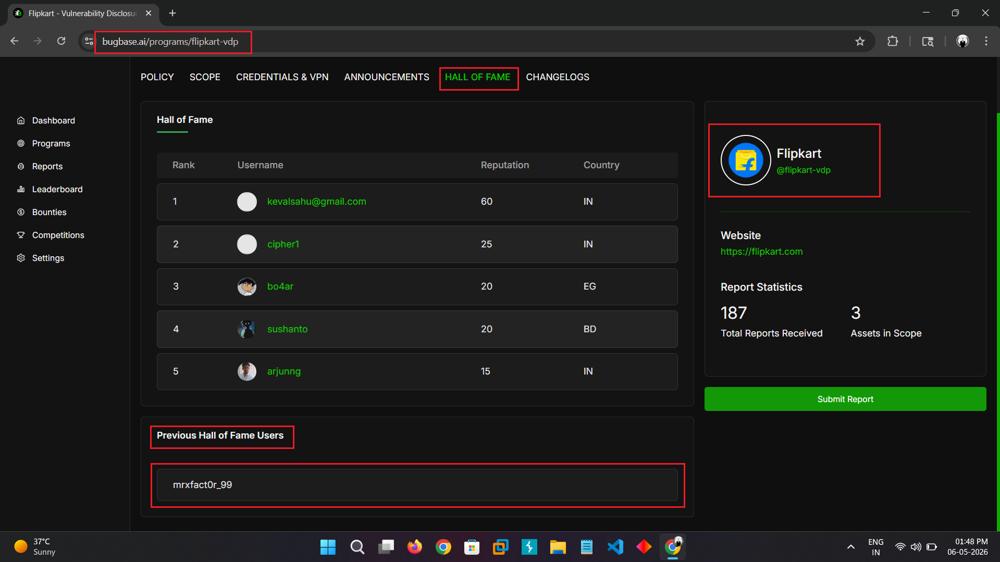

Hello Hackers 👨💻🔐

I hope you all are doing well and continuing to secure our digital landscape 🔐✨
Today, I want to share my long and interesting journey that led me to the Flipkart Hall of Fame 🏆
🚀 The Beginning
I discovered that Bugbase.ai hosts a public bug bounty program for Flipkart. However, it doesn’t provide monetary rewards only acknowledgment and a Hall of Fame mention.
Despite that, I decided to start hunting 🐛
During my experience, many of my reports stayed pending, and responses took months ⏳. The platform felt quite slow.
I completed my KYC around 3 months ago, but it is still pending. I also sent multiple emails 📩, but received no response ❌
Clearly, the platform needs improvement, especially in terms of support and response time.
🎯 Private Program Opportunity
One day, I received an invitation to Flipkart’s private bug bounty program 🎉
I thought this was my opportunity to earn both a bounty 💰 and recognition.
I started hunting again, but many of my reports were marked as informational. I couldn’t understand why 🤔
🧪 The Discovery
Eventually, I discovered a sensitive endpoint exposing a .classpath file 📂⚠️
This file was leaking server directory information, which could be useful for attackers during further exploitation.
I immediately reported the issue responsibly 📩
However, the validation process was extremely slow 1 month, 2 months, even 3 months ⏱️
📩 Response & Outcome
Finally, I received a response from the team.

They classified the issue as low impact and decided not to provide a bounty. However, they offered a Hall of Fame acknowledgment.
Honestly, I was quite surprised 😶 and didn’t fully agree with the impact assessment.
But i faced this kind of experience with India's bug bounty programs.
In many cases especially in some programs issues are fixed silently or marked as duplicates without proper credit so thats why i avoid India's bug bounty program due to my past experiences but in this case it is India's program with Indian bug bounty platform i appreciate atleast they give hall of fame 🙃
🔄 The Unexpected Twist
After Flipkart confirmed my Hall of Fame recognition, I was really excited and waited for my name to appear 🎉🏆
But even after 1 to 2 months, there were no updates as like previously happened 😕⏳
So, I decided to raise a support ticket with the Bugbase support team 📩. Unfortunately, I didn’t receive any response from them either ❌
After multiple follow-ups and a long wait, I finally received a reply. They informed me that Flipkart was removing its program from the Bugbase platform 🔄

Later, I noticed something unexpected…

Instead of being listed under the private program (where I was originally invited), my name was added to the public bug bounty program Hall of Fame 🐛📜
Honestly, I’m still not sure why this change happened 🤔
But after sending multiple emails and waiting for so long, I’m just happy that my name was finally added 🙌✨
Hall Of Fame: https://bugbase.ai/programs/flipkart-vdp

🏅 Final Result
- ✅ Vulnerability reported successfully
- ⏳ Very long validation process
- 🏆 Flipkart Hall of Fame acknowledgment received
- ❌ No monetary bounty
Even though I didn’t receive a bounty, getting recognized in the Hall of Fame is still something I appreciate.
💡 Final Thoughts
- 🔍 Persistence is key in bug hunting
- ⚠️ Not all valid bugs get rewarded
- ⏳ Patience is required in disclosure processes
- 🏆 Recognition still holds value
That’s my story!
If anyone has questions or queries, feel free to reach out through my Linktree links 🔗
Thank You,
MR. X FACTOR
🔗 Handles:
- Linktree: https://linktr.ee/mrxfact0r_99